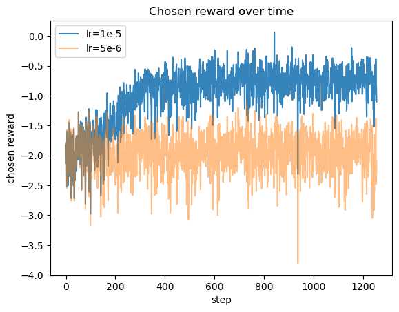
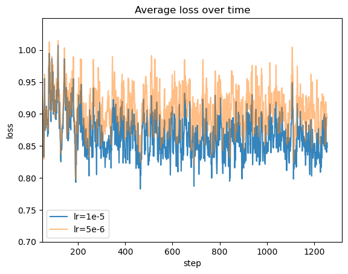

Our goal is to fine-tune a small GPT2 model (124M) using DPO and LoRA, with a dataset from Anthropic [1], which contains approximately 16K high-quality conversational interactions. The data represents diverse dialogues measured by metrics such as coherence, relevance, and engagement. We will use this dataset to enhance our model’s ability to generate human-like, contextually appropriate responses. Performance will be assessed using perplexity as the universal method across 3 different datasets. Success will be determined by the model’s improved capability to produce coherent and engaging dialogues that mimic human conversation, and a lower perplexity score. After 1 epoch of training, the performance slightly improved, but there is a significant limitation due to the model size and the training time.
Model Link: https://huggingface.co/FXNan/gpt2-124M-DPO
Training language models to follow instructions with human feedback has become a significant area of research in the field of natural language processing (NLP). The primary goal is to enhance the ability of AI models to understand and execute complex human instructions accurately and contextually. Early work in this domain involved supervised learning techniques, where models were trained on large datasets containing pairs of instructions and corresponding outputs[2]. However, these methods often fell short in producing responses that aligned well with nuanced human preferences and expectations.
To address these limitations, researchers have turned to reinforcement learning with human feedback (RLHF). This approach leverages human evaluators to provide feedback on model outputs, guiding the learning process to better align with human judgment. A notable advancement in this area was demonstrated by Christiano et al., who trained models using a combination of human preferences and reinforcement learning techniques to improve performance on complex tasks[3].
Moreover, large-scale datasets have been curated to facilitate this line of research. The Anthropic/hh-rlhf dataset, for instance, contains approximately 160,000 high-quality conversational interactions and has been instrumental in training state-of-the-art models such as Zephyr-7B-β[1]. This dataset includes diverse and context-rich dialogues, providing a robust foundation for fine-tuning models to generate human-like and contextually appropriate responses.
Recent studies have also emphasized the importance of combining automatic metrics with human evaluations to assess model performance comprehensively. Metrics such as perplexity offer quantitative insights, and it is also the universal method to evaluate the performance of language models, and can be applied across different datasets and tasks. [4]
To make the training process more efficient, we used DPO and LoRA technologies to increase computing speed and make full use of limited GPU memory resources.
The key insight of Direct Preference Optimization (DPO) is the pre-trained model itself already has a certain ability to distribute rewards, so there is no need for an explicit reward model[5]. Therefore, with the preference dataset that compares two answers, the model can be trained to maximize the probability of the preferred answer. DPO is simpler to implement compared to traditional RLHF pipelines and PPO algorithm. RLHF usually requires training multiple language models (Actor, Critic, Reward model, Reference model) and sampling the LM policy during training, whereas DPO optimizes preference learning through a straightforward classification objective, avoiding such complexities.
DPO use a loss function that increase the probability of the preferred response while decreasing that of the non-preferred response:
Here, is the logistic sigmoid function, and denote the preferred and less preferred responses respectively.
Low-rank adaptation is a common fine-turn method to make a base model have a better performance in a downstream task. Inspired by the finding that a large model may not fully utilize their express ability, and those weights have low rank intrinsically, Edward Hu, et al. hypothesize that the amount of weight change also has this low rank property. Based on LORA, fine-turning only need a small amount of parameter to adjust a large model; a larger matrix is the product of two smaller matrices with a much lower rank [6].
Less parameters to update significantly reduce the optimizer’s memory footprint and computation cost, which is crucial for training large models.
The problem we are addressing is improving the ability of language models to generate responses that are not only contextually appropriate but also align closely with human preferences. Traditional language models, despite their sophistication, often produce outputs that lack coherence, relevance, or engagement when responding to complex instructions or participating in extended dialogues. Sometimes the outputs can be toxic. This gap between model-generated outputs and human expectations limits the practical usability of these models in real-world applications, such as customer service, virtual assistants, and conversational agents.
The potential solution involves fine-tuning pre-trained language models using DPO. This method allows the model to learn from human preferences directly, optimizing for responses that humans find more acceptable. The process includes:
Data Collection: Utilize the Anthropic dataset, which contains high-quality conversational interactions, to provide a rich training ground for fine-tuning. Gather human feedback on model-generated responses to create a reward signal for reinforcement learning. In fact, it can be an iterative process, that uses a small amount of data to fine-tune the model first, then use the model to generate more pairs of answers for humans to rank them.
Model Training: Pre-train the model using large-scale datasets to learn general language patterns, and use an instruction dataset for supervised fine-tuning. Fine-tune the model using RLHF or DPO, where human feedback is used to adjust the model’s parameters to produce more human-like responses.
Evaluation: Use a combination of automatic metrics (perplexity on TruthfulQA, Winogrande, and PKU RLHF dataset) to assess the model’s performance. Iteratively improve the model based on these evaluations to ensure that it generates responses that are coherent, relevant, and engaging. By addressing the problem through this well-defined, measurable, and replicable approach, we aim to bridge the gap between AI-generated responses and human expectations, ultimately enhancing the practical usability of conversational AI systems.
For this project, we will use the Anthropic dataset to fine-tune our chat model. Below are the details of the dataset:
Link/Reference to Obtain It: from Hugging Face at the following link: Anthropic/hh-rlhf
Description of the Dataset
Size of the Dataset: The dataset contains approximately 160,000 conversational interactions. We only care about the 3 things: the instruction from the user, and one chosen response that is preferred by the user, and one rejected response that is less preferred by the user.
Observation Details
chosen: instruction + preferred responserejected: instruction + less preferred responseCritical Variables and Their Representation
everything will be stored as text data. Before training, they will be tokenized and converted into numerical representations suitable for embedding in the model.
Data Splits
1 | Below is an instruction that describes a task. |
1 | { |
To ensure that the project can be completed within the limited time, we constrained the scope of work to fine-tuning an existing SFT model using DPO and using the perplexity to evaluate the degree of model alignment. At the same time, due to computing power limitations, we chose a small model with 124M parameters.
The autoregression model can capture the causal dependencies in the language sequence very well, and this method can be applied to various tasks, such as filling in the blanks, multiple choice, and continuation. At the same time, this type of model can easily change the task objectives condition to natural language instructions. Since this type of model unifies all NLP tasks into next-token prediction, we can use perplexity to evaluate all tasks[4].
Mathematical Representation:
$ \text{Perplexity}(P) = \exp\left(-\frac{1}{N} \sum_{i=1}^{N} \log P(w_i)\right) $
where is the probability assigned by the model to the word in the sequence, and is the number of words in the sequence.
The metrics should considers the model’s ability to modeling natural language, how trustworthy the model is, and how well the model can satisfy the user’s requirements. We will use the following datasets to evaluate the model:
The model has better performance if it has a lower perplexity score on these datasets. Also, for simplicity, we only used torch.nn.CrossEntropyLoss as the score, and did not calculate the perplexity explicitly.
To correctly evaluate the cross-entropy loss, we parse each observation using the template format, concatenating the best response after instruction; then, we calculate the cross-entropy loss only on the response part which should be generated by the model, comparing the predicted logits and actual labels. It is very similar to the normal supervised training process but does not update the model parameters.
Overall, the model’s performance slighly improved, and the cross entropy loss is reduced compared to the baseline. However, the model’s performance is still limited due to the model size and the training time.

The DPO loss during the training process
The reward of the policy model
Obviously, the model with a larger learning rate has a faster convergence rate and a lower loss. This phenomenon is especially significant in the first 400 steps.
We speculate that the cosine annealing schedular makes the phenomenon more obvious, because at the beginning, the learning rate is higher, so the model can learn faster.
| Dataset | Baseline | lr=5e-6 | lr=1e-5 |
|---|---|---|---|
| TruthfulQA | 2.375 | 2.372 | 2.338 |
| Winogrande | 3.989 | 3.985 | 3.934 |
| PKU-Alignment | 2.843 | 2.830 | 2.770 |
This table shows the cross entropy loss of the response part of the model on the three datasets. The lower the score, the better the model’s performance.
The improvement from the baseline is small but consistent across all datasets, with a 1.5% improvement on average.
The model using lr=1e-5 has a better performance than the one using lr=5e-6, which is consistent with the training loss.
Winogrande has the highest loss for all models. It is understandable because this dataset is fill-in-the-blank questions; in order to adapt to perplexity method, we need to manually cue the model to predict the correct word.
With limited amount of fine-tuning using DPO, the model’s performance has improved for all datasets, showing that DPO is an effective method to align the model with human preferences. The DPO method explores the potential of the SFT model and makes it clearer how the model can meet user requirements.
However, the high perplexity score on the Winogrande dataset indicates that instruction format is crucial for the model’s performance. The model needs to be trained on a more diverse dataset to improve its performance on this dataset.
In the pre-training process, the peak learning rate should be around 5e-5; in full parameter fine-tuning, the peak learning rate should be around 2e-7.
However, it is not clear for us what is the appropriate learning rate for LoRA fine-tuning. Since there are not many parameters for Adam to update, the learning rate can be larger than the full parameter fine-tuning.
LoRA already limits the degree to diverge from the base model, so a larger learning rate can help the model to learn faster.
The model size is a significant limitation. 124M is a toy size for a language model, so the model cannot remember too much knowledge. The training time is also a limitation, because the model needs to be trained for a long time to converge.
Also, GPT2 architecture is old for now; other position embedding methods and transformer architectures may have better performance.
Test set contamination can be another potential problem, because they may have the same prompt and similar responses, making the score better than normal.
Problem: Language models can inadvertently learn and propagate biases present in the training data. This can lead to generating responses that are discriminatory or offensive.
Mitigation:
Problem: The conversational AI could be used maliciously, for instance, to create deepfake dialogues, spread misinformation, or engage in manipulative conversations.
Mitigation:
This experiment underscores the feasibility and importance of validating alignment techniques in real-world AI applications. It highlights the critical role of human feedback in shaping model behavior and the ongoing challenges in ensuring model safety and fairness. Future work should focus on broadening the demographic diversity of labelers, enhancing data collection methods, and developing robust mechanisms to prevent model misuse and harmful outputs. This study provides a foundation for improving the alignment of AI models, contributing to the responsible and ethical deployment of conversational AI systems.
[1] Anthropic. (2023). Anthropic/hh-rlhf. Hugging Face Datasets. Retrieved from https://huggingface.co/datasets/Anthropic/hh-rlhf
[2] Vinyals, O., & Le, Q. V. (2015). A neural conversational model. arXiv preprint arXiv:1506.05869.
[3] Christiano, P. F., Leike, J., Brown, T., Martic, M., Legg, S., & Amodei, D. (2017). Deep reinforcement learning from human preferences. arXiv preprint arXiv:1706.03741.
[4]Radford, A., et al. (2019) “Language models are unsupervised multitask learners.” https://d4mucfpksywv.cloudfront.net/better-language-models/language-models.pdf
[5] Rafailov, R., et al. (2023).
“Direct Preference Optimization: Your Language Model is Secretly a Reward Model”.
https://arxiv.org/abs/2305.18290
[6] Hu, E., et al. (2021). “LoRA: Low-Rank Adaptation of Large Language Models”. https://arxiv.org/abs/2106.09685
[7] MBZUAI. (2023).
“MBZUAI/LaMini-GPT-124M”. https://huggingface.co/MBZUAI/LaMini-GPT-124M
[8]Lin, S., et al. (2021). “TruthfulQA: Measuring How Models Mimic Human Falsehoods”. https://arxiv.org/abs/2109.07958
[9] Sakaguchi, K., et al. (2019). “WinoGrande: An Adversarial Winograd Schema Challenge at Scale”. https://arxiv.org/abs/1907.10641 . https://huggingface.co/datasets/allenai/winogrande
[10] PKU-Alignment. (2023). “PKU-Alignment/processed-hh-rlhf”.https://huggingface.co/datasets/PKU-Alignment/processed-hh-rlhf